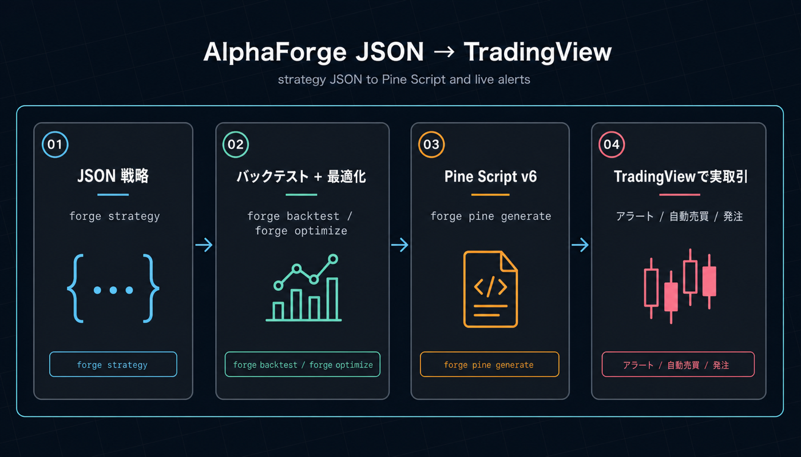
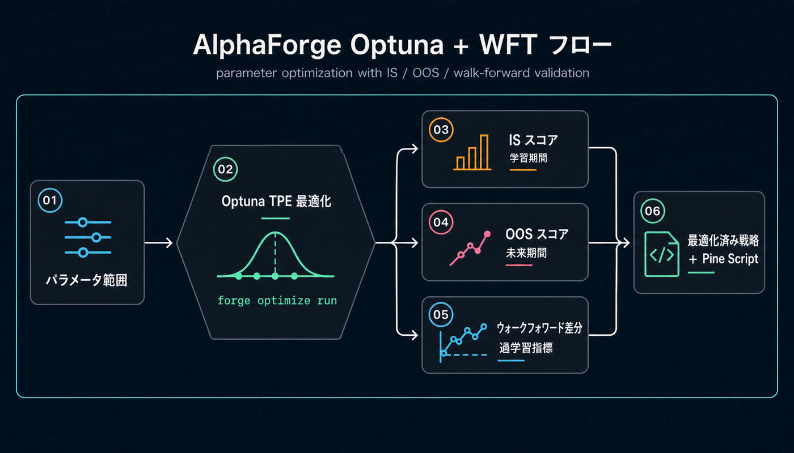

AlphaForge ドキュメント¶
AlphaForge は、JSON で書いた戦略を Pine Script v6 に自動変換して TradingView でそのまま動かせる、ローカル CLI のクオンツ研究ツールです。 Optuna TPE による自動最適化とウォークフォワード検証で過学習を抑え、戦略データ・取引履歴・API キーをすべて自分のマシンに留めたまま、研究から実取引（TradingView 経由）まで一本のパイプラインで回せます。
本ドキュメントでは、インストールから戦略開発、AI コーディングエージェントとの連携までを順を追って解説します。
AlphaForge が他と違う 2 つの強み¶
1. JSON 戦略 → ワンコマンドで Pine Script v6 → TradingView で実取引へ¶
戦略は JSON で定義し、alpha-forge pine generate で TradingView の Pine Script v6 に自動変換します。Web UI 統合型プラットフォームのように特定のサーバや取引所アダプタに縛られず、ユーザーはすでに使い慣れた TradingView 上でアラート・自動売買・チャート可視化までシームレスに利用できます。

2. Optuna TPE + ウォークフォワード検証で「過学習しない」最適化¶
alpha-forge optimize run 一発で Optuna ベイズ最適化（TPE）を実行し、--split でウォークフォワード分析（WFT）を同時にかけて IS（学習期間）/ OOS（検証期間）の性能差を可視化します。Web UI 型プラットフォームに不足しがちな最適化と汎化性能検証を、CLI で素早く回せます。

他のクオンツツールとの比較¶
| 観点 | AlphaForge | Web UI 統合プラットフォーム型 | フレームワーク型（vectorbt / Backtrader 等） |
|---|---|---|---|
| 戦略の書き方 | JSON DSL（バージョン管理しやすい） | Python クラス（UI 内エディタ） | Python クラス |
| TradingView 連携 | Pine Script v6 を自動出力 | 基本なし | 基本なし |
| 自動最適化 | Optuna TPE + WFT が標準 | 弱い／手動が中心 | ライブラリ追加で実装 |
| データ・鍵の所在 | 完全ローカル | サーバ常駐 | ローカル |
| 動作形態 | バイナリ CLI（数百MB / 1ファイル） | Docker / SaaS スタック | Python スクリプト |
| AI エージェント連携 | Claude Code / Codex 用スキル同梱 | 一部対応 | 自前実装が必要 |
| 実取引の経路 | TradingView 経由（取引所中立） | 取引所・ブローカー直接 | 自前で実装 |
こんな方に向いています¶
- TradingView をすでに使っていて、信頼できるバックテスト・最適化を経た Pine Script を投入したい方
- バックテストフレームワーク（Backtrader、vectorbt 等）の代替を探しているエンジニア・クオンツリサーチャー
- 戦略 JSON を コードとしてバージョン管理 したい開発者
- Claude Code や Codex などの AI エージェントと組み合わせて、戦略を 自律的に探索・最適化 したいユーザー
- ベイズ最適化・ウォークフォワード検証を ワンコマンド で済ませたい方
主な話題¶
- はじめに — Whop 登録不要のインストール、最初のバックテスト（Trial プランで 10 分体験まで）、有料プラン購入後の認証
- 目的別ユースケース — 自分の役割（TradingView ユーザー / Python 開発者 / クオンツ / 自動売買検討者 / AI エージェント利用者）から最適な次ページを選ぶ
- CLI リファレンス —
alpha-forgeコマンドの全パラメータと出力例 - 戦略テンプレート — HMM × BB × RSI などの組み合わせ戦略を実 JSON 付きで紹介
- AI 駆動の戦略探索ワークフロー — Claude Code / Codex × AlphaForge による自律戦略開発の HOWTO
- 利用規約と免責事項 — 免責事項・EULA・プライバシーポリシー
関連リンク¶
- Alforge Labs 公式サイト — 製品紹介とインストールガイド
- チュートリアル — 戦略 JSON を作って動かす入門
- GitHub Discussions — 質問・アイデア・戦略共有のコミュニティ
- サポート — 技術的なお問い合わせ